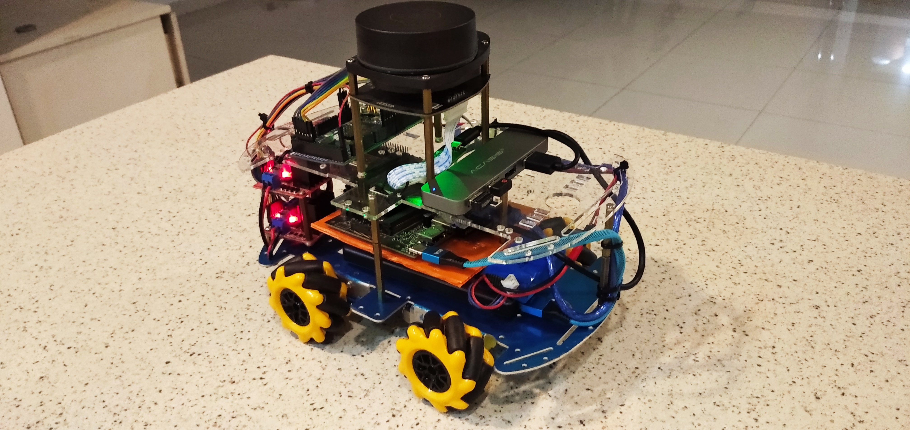

Autonomous Differential Drive Robot
A mobile platform equipped with various sensors, able to autonomously move to any number of destinations within a map, while avoiding obstacles.
Project Overview
This mobile platform is used for mapping and testing different SLAM approaches. The platform is configured for dead reckoning using its encoders, set up for gmapping SLAM with lidar and odometry or rtabmap with the use of the calibrated camera.
Platform Specifications
Technical Implementation
Gmapping nodes run on the robot (NVIDIA Jetson) and use a 2D lidar to build a map, whilst publishing odometry of the robot and its IMU data (orientation), respectively to the odometry and transforms topics.
The map server runs on the actual robot, whilst a different computer in the network is used to view the live map and location of the robot during the live map on RViz. At localization stage, using AMCL (Adaptive Monte Carlo Localization) packages, the robot can be assigned a global goal to reach, whereby it will iteratively work out both local and global cost maps to reach the destination.